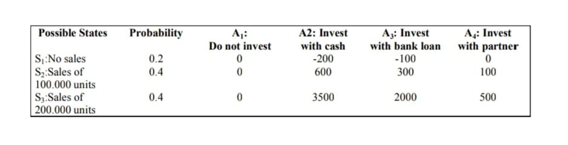
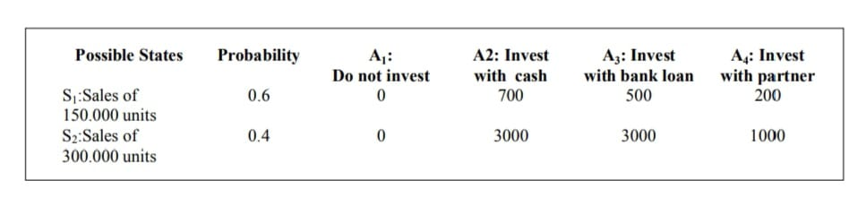
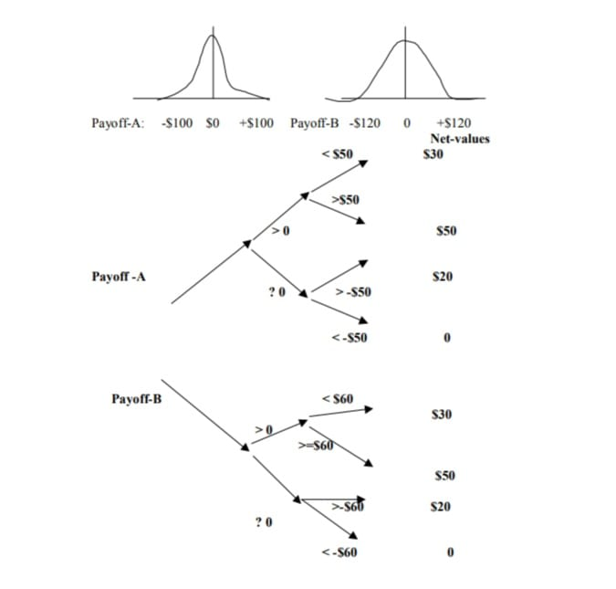
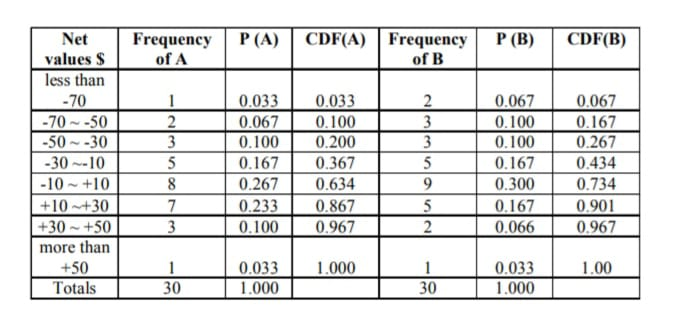
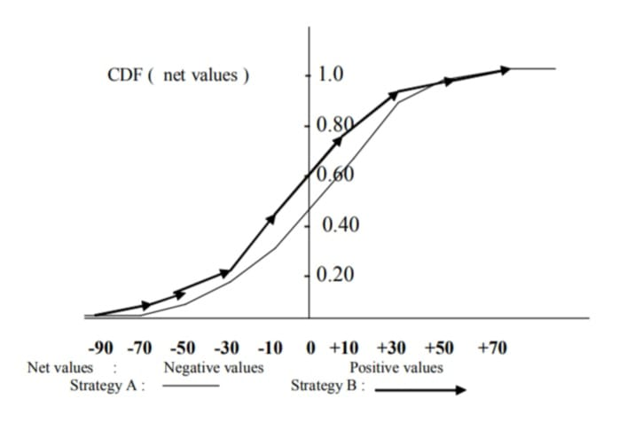

<!DOCTYPE html>
<html lang="en">
<head>
    <meta charset="UTF-8">
    <meta name="viewport" content="width=device-width, initial-scale=1.0">
    <link rel="stylesheet" href="style.css">
    <title>Document</title>
</head>
<body>
    <section class="pg1">
        <div class="data"><br>
            <p>LTCM in the Case Study of chapter 8), because they did not take
                important scenarios into account in their mathematical models.”<br><br>
                In each of the above mentioned cases, the mistake made was not asking
                themselves the critical question: “what happens if we are wrong — and very
                wrong?” In other words, they mistakenly assessed the risks inherent to their
                decisions or did not make the correct scenario planning.<br>
                There are two very different kinds of scenario planning. The first is exploratory,
                an attempt to understand the outlines of an unknown scenario — the future —
                especially in a general interest context. Exploratory planning may find potential
                unforeseen risks, but is not always relevant to the decision maker.<br>
                The second kind of planning tries to reach an understanding of risk management. Decision-making scenarios are not created from the abstract. One must
                know who the decision makers are, since they also make decisions based both
                on perceptions and facts.<br>
                For the scenario planning, it is important that the team developing the range
                of future alternatives is sure that the “official future” is included in the range
                of alternatives. Only after analyzing this scenario, with a well-made survey,
                should other possibilities be considered.<br>
                How to identify and describe the official future? It is necessary to examine
                the decision makers’ knowledge, their organizational environment and the
                market where they act. This test could be condensed into five questions:<br><br>
                • <b>first question:</b> If it were possible to find a fortune teller, what question
                would you ask concerning the future?<br>
                • <b>Second question:</b> In reference to a given decision, what would be the
                scenario for the best possible result?<br>
                • <b>Third question:</b> Which would be the scenario for the worst possible
                result?<br>
                • <b>Fourth question:</b> If you were about to retire or to leave the company,
                what you like your colleagues to consider your legacy?<br>
                • <b>Fifth question:</b> Are there important barriers to change in your organization?<br></p>
        <br><br></div>
    </section>
    <section class="pg2">
        <div class="data"><br>
            <p>Scenarios may be used to train decision makers in recognizing signs of change
                on the proper occasions. Scenarios are useful to introduce gradual changes in
                the decision-making models themselves. In sum, scenarios show the decision
                makers their own perception of the risk environment.<br><br>
              <center> <h2> Conclusions<div class="line"></div></h2></center><br>
                In this chapter, complexity in decision problems due to uncertainty or risk
                factor, multiple scenario definition and multiple criteria decision, were presented. Subjective assessment of probability values, scenario definition and
                multiple criteria decision with or without optimized solution, are problems that
                do not have definitive answers, requiring several steps of the decision-making
                process to reach favorable and consensual results.<br>
                In addition to the basic structure of the decision-making process of semistructured and tactical models of decision, we are facing new factors that
                encompass the complex and nonstructured nature of strategic decision problems.<br>
                Complex problems and nonstructured (known also as ill-defined) problems are
                often considered similar problems, but it is possible to find complexity (in the
                sense of NP or Non-Polynomial complexity defined in Mathematics) in welldefined problems (small number of variables and functions), as in the case of
                optimization of nonlinear problems or matrix inversion problems.<br>
                Summarizing the results of a decision based on the models and examples shown in
                this chapter, one can say that the selection of the best or top best alternatives of
                decision is a difficult task. We may think about certain personal considerations and
                organizational biases a decision analysis should overcome, and the concept of
                “good” rather than “best” decision must be considered.<br>
                The choice of an adequate decision-making methodology will be one of
                personal or organizational preference, and we can not decide a priori which
                particular methodology is appropriate. Rather, we may analyze a problem
                according to different points of view to see what the outcomes for different
                ways of analysis are, and in this way determine which course of action is most
                justifiable.<br></p>
        <br><br></div>
    </section>
    <section class="pg3">
        <div class="data"><br>
            <p><center><h2>Questions for Reflection and Discussion<div class="line"></div></h2></center>
                Considering the case in the section titled The Value of Scenarios Hidden Traps,
                analyze the exercises with multiple scenarios presented in this chapter and give
                answers to the five questions for an efficient scenario planning. For instance,
                what would be the best and worst scenarios or the scenario for the official
                future? List and comment on the “hidden traps” existing in the decision problem
                examples in this and in the previous chapter.<br><br>
                1. What is a decision problem with risk?<br>
                2. What are utility values used for?<br>
                3. What is the importance ofthe sensitivity analysis in a decision problem?<br>
                4. What is a decision scenario?<br>
                5. Explain, using an example, how a Linear Programming problem with more
                than one goal function is formulated and solved.<br>
                6. Give examples of decisions problems with risk, multiple goals and multiple
                scenarios. Build a decision tree for each example.<br>
                7. What is and how is calculated the joint utility value u(x1, x2) of two goals
                u(x1) and u (x2)?<br>
                8. Explain each kind of utility curve: with risk aversion, risk neutral, and risk
                preference. Draw the utility curve graphic for u(x1,x2),using the example
                developed in the chapter.<br>
                9. How to make a Sensitivity Analysis of a decision problem with multiple
                goals and multiple scenarios? Why is the sensitivity analysis for this kind
                of problem complex?<br>
                10. What is and what is the purpose of the “What–if” question? Give
                examples.<br>
               <center><h2> Exercises<div class="line"></div></h2></center>
                1. Investment Model With Multiple Scenarios
                Company BYS must choose one of the following alternatives:</p>
        <br><br></div>
    </section>
    <section class="pg4">
        <div class="data"><br>
            <p>  A1: do not invest in a new product development<br>
                A2: invest in the development of new product paying the cost in cash<br>
                A3: invest using bank loan<br>
                A4: invest in partnership with a multinational company.<br><br>
                Scenario One<div class="line"></div><br>
                The national market might present one of the following situations:<br><br>
               <b> S1:</b> There is no demand for the new product, with probability P(S1)=0.2 as
                shown by a market research,<br>
                <b>S2:</b> There might be a sales average of 100.000 units of the new product with
                probability P(S2)=0.4, and<br>
               <b> S3: </b>There might be a sales average of 200.000 units of the new product with
                probability P(S3)=0.4.<br><br>
                The complete decision matrix, with earnings established after exhaustive risk
                analysis of the possible situations, expressed in millions of dollars, is the
                following:<br><br>
                <br>
                Scenario Two<div class="line"></div><br><br>
                The foreign market might present the following possibilities:<br><br>
                S1: There may be an average sale of 150.000units of the new product (P(S1) = 0.6)<br>
                S2: There may be an average sale of 300.000 units of the new product (P(S2) = 0.4)</p>
        <br><br></div>
    </section>
    <section class="pg5">
        <div class="data"><br>
            <p>The complete decision matrix, including earnings in million dollars is the following:<br><br>
               <br><br>
                Considering that the company cannot address both scenarios at the same time:<br><br>
                • Which one is the best decision based on the best average earnings?<br>
                • Which is the best decision using the best utility average value, with neutral
                risk, risk preference, or risk aversion utility?<br>
               <center><h2> References<div class="line"></div></h2></center>
                Bonabeau, E. (2003). Don’t trust your gut. Harvard Business Review, 81(5),
                116-223.<br>
                Charan, R. (2001). Conquering a culture of indecision. Harvard Business
                Review, 79(4), 75-82.<br>
                Choo, C. W. (1998). Knowing organizations. Oxford, UK: Oxford University Press.<br>
                Clemen, R. T., & Reilly, T. (2001). Making hard decisions with decisions
                tools. New York: Duxbury Press.<br>
                Cook, T.M., & Russel, R.A. (1993). Introduction to management science.
                NJ: Prentice-Hall.<br>
                Day, G.S., et al. (Eds.). (1997). Wharton on dynamic competitive strategy.
                New York: John Wiley & Sons.<br>
                Goicoechea, A., et al. (1982). Multi-objective decision analysis with
                engineering and business applications. New York: John Wiley & Sons.<br>
                Goodwin, P., & Wright, G. (1996). Decision dnalysis for management
                judgment. New York: John Wiley & Sons.</p>
        <br><br></div>
    </section>
    <section class="pg6">
        <div class="data"><br>
            <p>Gregory, G. (1980). Decision analysis. New York: Pitman Books.<br>
                Harker, P.T. (1987). Incomplete pairwise comparison in the AHP. Mathematical Modeling, 9(11), 837-848.<br>
                Keeney, R., & Raiffa, H. (1976). Decisions with multiple objectives:
                Preferences and value trade off. New York: Wiley & Sons.<br>
                Kinoshita, E. (1996). Introduction to management science (in Japanese).
                Tokyo, Sakurai Publishers.<br>
                Konno, H. (1997). Introduction to decision analysis (in Japanese). Tokyo:
                Assakura Publishers.<br>
                Roy, B. (1968). Classement et choix en presence de points de vue multiples
                (la methode ELECTRE). Review Française d’Informatique et de Recherche Operationnelle, 8, 57-75.<br>
                Saaty, T. L. (1977). A scaling method for priorities in hierarchical structures.
                Journal of Mathematical Psychology, 15, 234-281.<br>
                Saaty, T.L. (1980). The analytic hierarchy process: Planning, priority,
                resource allocation. New York: McGraw-Hill.<br>
                Saaty, T. L. (2001). Decision making with dependence and feedback: The
                analytic network process(2nd ed.). Pittsburgh, PA: RWS Publications.<br>
                Shafer, G. (1976). A mathematical theory of evidence. NJ: Princeton
                University Press.<br>
                Tabucanon, M. T. (1988). Multiple criteria decision making in industry.
                New York: Elsevier.<br>
                Terano, T., et al. (1984). Fuzzy systems: Theory and its applications (in
                Japanese). Tokyo: Ohm Publishing.<br>
                Warfield, J.N. (1978). Societal systems: Planning, policy and complexity.
                New York: John Wiley & Sons.<br>
                Warfield, J.N. (1994). A science of generic design: Managing complexity
                through systems design (2nd ed.). Iowa State University Press.</p>
        <br><br></div>
    </section>
    <section class="pg7">
        <div class="data"><br><br>
            <center><h3>Chapter XI</h3><br><h1>The Role Of<br>
                Simulation And Modern<br>
                Business Games</h1></center>
            <br><br>
            <p><center><h2>Probabilistic or Stochastic Process<div class="line"></div></h2></center><br>
                “Probability or stochastic process” is a name used to designate mathematical
                models that represent the behavior of phenomena described by probability
                theory, ranging from a simple game of coin tossing up to more complex
                phenomenon like “Brownian motion theory”, “investment analysis”, etc.
                Stochastic process uses mathematical models to represent phenomena ruled by
                the probabilistic variation of some variable over time.<br>
                Simulation methods, also known as Monte Carlo methods, are stochastic
                processes that use mathematical models that have similar behavior of real
                problems, feeding these models with random values generated according to
                some probability distribution. The term Monte Carlo is used as a synonym for
                simulation since in some problems the generation of probabilistic values was
                historically linked to the use of the roulette wheel.<br>
                In this chapter we show how simulation method can be used to evaluate
                complex decision problems involving uncertainty. This kind of problem involves</p>
        <br><br></div>
    </section>
    <section class="pg8">
        <div class="data"><br>
            <p>knowledge of probability distribution (such as uniform, Poisson, or Normal
                distribution) used to represent the probabilistic process and the value of
                respective parameters (such as the average value and the standard deviation).<br>
                Simulation is the most appropriate tool for visualizing, testing, and evaluating the
                parameters and the dynamic behavior of a probabilistic process. Simulation
                uses algorithms that generate a population of probabilistic events which makes
                possible the estimation of the values of parameters of the problem. The results
                of a simulation can be proven to be valid approximations of the values of the real
                phenomenon which they simulate.<br><br>
                <center><h3>Using Simulation to Compare<br>
                    Multiple-Stage Strategic Decisions<div class="line"></div></h3></center><br>
                In previous chapters, several aspects of decision problems, involving the choice
                of the best alternative, uncertainties, multiple scenarios, multiple goals, etc.,
                have been studied. However those were cases of decision for only one stage.
                Many complex strategic-decision problems are formed by a dynamic sequence
                of decision problems involving multiple stages of decisions. These problems are
                more appropriately represented using a decision tree, and simulation is used
                to make comparisons of different strategies along the decision tree.<br>
                Let us consider the following two-stage strategies:<br><br>
               <b> Strategy A</b><br><br>
                <b>Stage one:</b> Invest in a high-risk stock whose payoff (Payoff-A) can be
                negative or positive values. Past data show that the payoff value varies from -
                $100 (maximum loss) to +$100 (maximum profit);<br><br>
                <b>Stage two:</b><br
                a. if Payoff-A is a positive value less than $50, then the investor must pay $30
                as expenses, or if Payoff-A is a positive value greater than $50, then the
                investor must pay $50 as expenses;<br>
                b. if Payoff-A is a negative value between $0 and (-$50), then the investor
                must pay $20 as expenses, or if Payoff-A is a negative value less than (-
                $50), then the investor pays $0 as expenses.</p>
        <br><br></div>
    </section>
    <section class="pg9">
        <div class="data"><br>
            <p><b>Strategy B</b><br><br>
                <b>Stage one:</b> Invest in a high-risk stock whose payoff (Payoff-B) can be negative
                or positive values. Past data show that the payoff value varies from -$120
                (maximum loss) to +$120 (maximum profit);<br>
                <b>Stage two:</b><br>
                a. if Payoff-B is a positive value less than $60, then the investor must pay $30
                as expenses, or if Payoff-B is a positive value greater than $60, then the
                investor must pay $50 as expenses;<br>
                b. if Payoff-B is a negative value between $0 and (-$60), then the investor
                must pay $20 as expenses, or if Payoff-B is a negative value less than
                (-$60), then the investor pays $0 as expenses.<br><br>
                In this simple project, the selection of strategy A or B depends on the results
                of the following events:<br><br>
                a. “Payoff-A” and “Payoff-B”, with two possible results: positive or negative
                values;<br>
                b. “positive value of Payoff A or B” results in two possible values for
                expenses;<br>
                c. “negative value of Payoff A or B” also results in two possible expenses;
                which provide 2 2 2 = 8 possible results.<br><br>
                <center><h3>Stochastic Analysis to Compare Two Similar Strategies<div class="line"></div></h3></center>
                <br>
                The analysis of a probabilistic decision problem to a broader band of variation
                of the parameter values is made by a simulation study, using probability
                distribution attributed to each value of the estimated parameter.<br><br>
                The estimated value of a parameter is used as the mean or average value of the
                distribution. Asking an expert, it is possible to define an “upper limit” for this
                average, such that only 5% of the possible values of this parameter surpass this
                upper limit. In a similar fashion, it is possible to define a “lower limit” such that
                only 5% of the possible values will be lower than this limit. In probability terms,
                this procedure corresponds to defining a confidence interval for the average
                value with 90% confidence.</p>
        <br><br></div>
    </section>
    <section class="pg10">
        <div class="data"><br>
            <p>If the decision maker and the expert agree that the average value provided by
                the estimate is located in a symmetric position with relation to these two limits,
                the normal distribution can be used. If not, one can evaluate the possibility of
                using other type of distributions such as the exponential, log-normal, beta,
                gamma distribution, etc.<br>
                In our case, we are assuming that the value of the Payoffs (negative or positive
                values) has a normal distribution with the average equal to the value estimated
                by the expert and the standard deviation equals to 25% of the difference
                between this average and one of the limits found. In the case of normal
                distribution an interval defined by the expression ± 4 (the average value
                plus and minus four times the standard deviation) corresponds to approximately 90% of the possibilities of occurrence of the values of this distribution.<br><br>
                Using these distributions the first stage of strategy A and B becomes:<br><br><br>
                <b>Strategy A</b><br><br>
                <b>Stage one:</b> Invest in a high-risk stock whose payoff (Payoff-A) is distributed
                according:<br><br>
                To N ( = $0, = $25), a Normal distribution with average value and
                standard deviation equal to $0 and $25, respectively; and<br><br>
                <b>Strategy B</b><br><br>
                <b>Stage one:</b> Invest in a high-risk stock whose payoff (Payoff-B) is distributed
                according:<br><br>
                To N ( = $0, = $30), a Normal distribution with average value and
                standard deviation equal to $0 and $30, respectively.<br><br>
                We are admitting that events in stage two do not involve probability distribution.
                Payoff’s normal distribution functions and decision trees for strategies A and
                B are as shown in Figure 11.1.<br>
                The simulation process to generate the Net values (Payoff minus expenses) for
                both strategies A and B is the following:</p>
        <br><br></div>
    </section>
    <section class="pg11">
        <div class="data"><br>
            <p>Figure 11.1. Payoff-A and Payoff-B probability distributions and the
                decision tree<br><br>
               
                <br><br> 
                • generate a normally distributed random value (using an algorithm or
                appropriate software for simulation);<br>
                • using this random value make appropriate calculation of stage two to have
                the final net value (positive or negative) for the strategy A or B.<br><br>
                For example, if the Payoff-A value generated is $76, the expenditure will be
                $50 and then the net value is $26; if Payoff-B value is -$67, the expenditure is
                zero and the final net value is -$67, and so on.<br>
                Table 11.1 presents results of 30 simulated events (net values) for strategy A
                and 30 events for B. The first column of this table shows intervals for the net
            </p>
        <br><br></div>
    </section>
    <section class="pg12">
        <div class="data"><br>
            <p>Table 11.1. Frequency, probability, and cumulative distribution function
                values of net values for strategy A and B<br><br>
                <br><br>
                values (from negative to positive values), the second and third columns show
                the frequency (number of occurrences) and the probability (p(A)= frequency
                divided by 30) of final net value in each interval. In the fourth column, the values
                of cumulative probability distribution function (CDF(A)) are registered. The
                values of CDF will be used for the comparison of the two strategies using the
                stochastic dominance technique. Table 11.1 contains also the same values for
                strategy B.<br>
                Placing the two strategies on the same graph of cumulative probability distribution function, we get the graph of “stochastic dominance” in which it is
                possible to compare the two strategies (Figure 11.2). This comparison is based
                on the fact that:<br><br>
                "If a cumulative probability distribution value of a strategy is to
                the right of the cumulative probability distribution value of another strategy for a value of an event, this means that this strategy
                has smaller probability of occurrence than the other strategy of the
                event considered."<br><br>
                In Figure 11.2, we can see that “strategy B” (indicated by arrows Ł) has
                stochastic dominance over “strategy A” (indicated by curves), because CDF
                curve for B is always located to the left of CDF curve for strategy A. This means
                that strategy B has greater probability to have negative net values but also
                greater probability to have positive net values than strategy A.<br><br>
                We need to compare both the lengths of the ranges for which a strategy is
                dominant and the differences between the CDF values. This comparison can be
        </p>
        <br><br></div>
    </section>
    <section class="pg13">
        <div class="data"><br>
            <p>Figure 11.2. Graph of stochastic dominance between <b>strategy A</b> and
                <b>strategy B</b><br><br>
            <br><br>
            made using the sizes of the areas defined between the two CDF curves. For
            instance, the area defined by CDF curves B and A for the positive net values,
            looks smaller than the area defined for the negative values. This means that
            strategy B has more possibility to have negative net values than positive values.
            Further analysis of stochastic dominance requires the use of other probabilistic
            techniques (see, for instance Goodwin & Wright, 1996).<br><br>
            The probabilities of occurrence of each event need to be estimated in a
            subjective mode, referring to the opinion of an expert involved in the project.
            The expert can attribute the probability values to each node of the decision tree
            by examining each node from left (starting node) to the right of the decision tree.
            Usually strategic projects are represented by complex decision trees with many
            branches and nodes. The estimation of probabilities made in each node may be
            dependent or independent of the estimate made in previous nodes. If dependency exists, one must estimate the probability of the event conditioned to the
            occurrence of events in previous nodes. This fact causes difficulties in the
            development of the subjective reasoning of the expert, leading to unlikely
            estimates. The subjective estimates of conditional probabilities in each node
            may lead to a biased estimation of the probabilities in the final events of the
            decision tree.<br><br>
            A more natural and logical procedure is to attribute the probability values,
            exploring the decision tree from the end to the beginning, that is, from right to </p>
        <br><br></div>
    </section>
    <section class="pg14">
        <div class="data"><br>
            <p>left. For example, an expert consulted about the probability of success of a
                project to launch a new product may estimate that, based in his or her
                knowledge about market demand for this type of product, the probability of
                success of this project is, for instance, P(Success) = 0.7 and then the
                probability of failure will be P (Failure) = 0.3. After fixing these values, the
                expert can estimate the probability of events located in the antecessor nodes to
                the events Success and Failure. After admitting of some “facts” (or the
                probability of their occurrence) it seems easier to estimate the probabilities of
                the events that caused these facts.<br><br>
                The following case study illustrates the assessment of probability values in a
                complex decision tree.<br><br>
                <center><h3>Business Game Simulates<br>
                    Competition Among Companies<div class="line"></div></h3></center>
                Long-term conflict or competition occurs when companies or countries find
                themselves in prolonged confrontation such as in the market share problem. It
                is necessary to establish a line of action or a decision sequence to take best
                advantage of each stage of competition. A decision in situation of competition
                can be examined by simulation software known as BUSINESS GAME.
                Business games have been formerly created based on the experience of
                strategic competition found in models of war games. In business games, the
                concepts of victory or defeat used in war games are replaced by the analysis
                of the behavior of the companies involved in competition, expressed in terms
                of economical results over a certain period of time.<br><br>
                A business game can be defined as:<br><br>
                "A sequential decision making exercise structured using a business strategy model or operational model, where participants
                assume the role of managers."<br><br>
                The term “game” always connotes competition, but business game’s main
                purpose is to systematically train the participants in the sense to have better
                understanding of the business strategies and operations using virtual business
                competition environments simulated in a computer. Competition arises as a</p>
        <br><br></div>
    </section>
    <section class="pg15">
        <div class="data"><br>
            <p>stimulus to create an environment of interest for understanding and testing
                alternatives for the simulated strategies or operations.<br><br>
                The “game” cannot be seen as an entertainment, as is the case of video games.
                The business game forms part of Game Theory, created by Von Neumann and
                Morgenstern, which is a mathematical model used to represent a situation of
                conflict in a general way.<br><br>
                Business game creates a complex environment with uncertainty simulating the
                alternatives for business decisions. Business game is a useful tool for demonstrating, testing, and training strategic decision making in companies, because
                it retains the effect of the diffusion of the results of a decision through future
                periods, taking into account the participation of rival companies.<br><br>
                The advantages of a business game are:<br><br>
                • it creates appropriate training conditions and environments for executive
                and manager’s decision-making process which are difficult to have by
                other tools;<br>
                • it allows for the repetition of the conditions for analyzing a decision under
                different economic and financial aspects;<br>
                • it permits testing of the different alternatives for an strategy or operation
                using different organizational structures for individuals, groups, functional
                hierarchy, etc;<br>
                • it allows interactive mid or long-term projection of the results of a strategic
                policy.<br><br>
                Some disadvantages are:<br><br>
                ‡ Cost and time factors: the cost of a software is high and the time spent
                to play a business game is long, since it requires several rounds of plays
                conducted by a team of professionals to operate the software;<br>
                ‡ Validity of the results and training: even though practicing the game
                clarifies the company’s strategic or functional mechanism, there is not a
                valid evidence that results of the game or the performance of game players
                will necessarily be repeated in real problems;<br>
                ‡ Danger of rashness: the mechanism of the simulation is regulated by
                mathematical equations of micro and macro economy theory. Some
                factors can be stressed over others, such as the importance of the low</p>
        <br><br></div>
    </section>
</body>
</html>